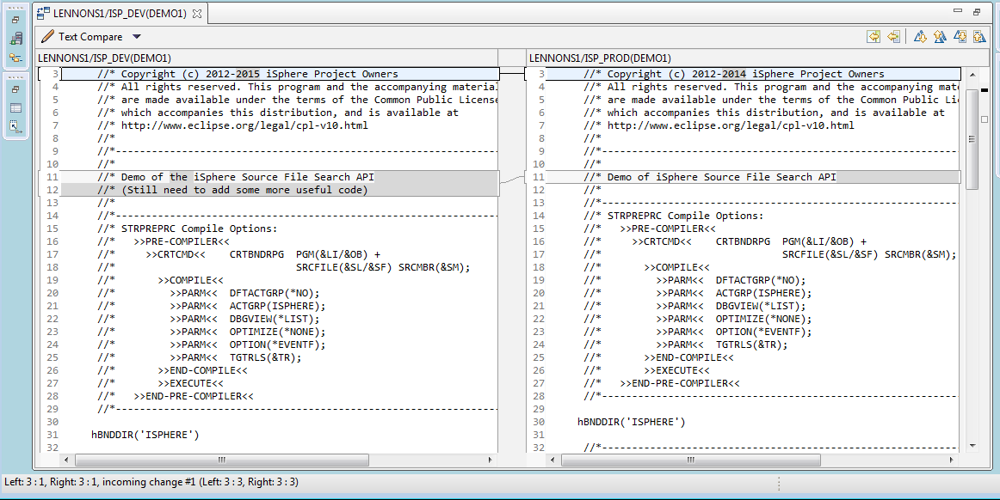

The Compare/Merge Editor gives you the ability to compare/merge source physical file members.
To compare/merge source physical file members do the following.
Enter the name of the source member that you want to compare the selected source member with and click the OK button.

Today there are a couple of restriction to know:
| Notice: The date of the source lines are set to the current date, if the Ignore Date option is selected. That cannot be change for today, due to restrictions in the Eclipse compare support. |
| Notice: It is impossible to exclude a range of columns from source compare, due to restrictions in the Eclipse compare support. |
It might be possible to fix both issues with the next release of RDi, provided that IBM/Rational updates the Eclipse version.
See these links for more details:
https://bugs.eclipse.org/bugs/show_bug.cgi?id=382427
https://git.eclipse.org/r/#/c/9004
If two members are selected at once, the first member is the Left member and the second one is the Right member. The members can be switched with the switch member button between the left and right member sections:

If three or more members are selected, the left member is set to *SELECTED and the name of the right member is set to *LEFT and cannot be changed.

When the OK button is clicked, a compare dialog is opened for each selected member.
This option is useful, when comparing members with the same name but different source files, e.g. members of the development level and members of the production level.
| Notice: The information message that pops up, when there are no differences between the members, is part of the Eclipse compare framework and cannot be disabled, today. |